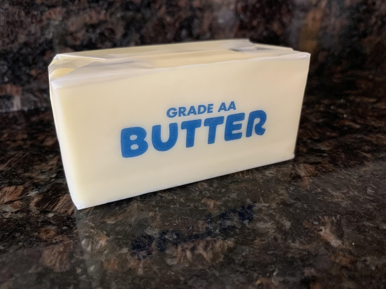

Butter is the churned dairy product made from cream. Butter is used in baking, sauces, frying, and as a spread. The milk of various animals, such as cow, sheep, goat, and yak can be used to make butter. Butter can be used in both savory and sweet applications. Butter made from fermented cream is cultured butter, butter made from pasteurized fresh cream is sweet cream and ghee is butter that has been clarified.
